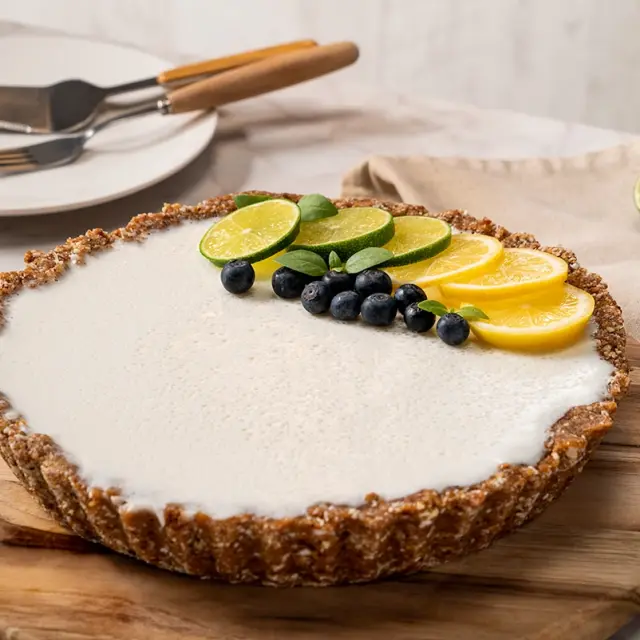

Pie de limón
Utensilios
Ingredientes para 14 porciones

- 8 Galletas macarena (128g)
- 6 cucharadas de mantequilla derretida (84g)
- 1 taza de leche condensada
- 1 media crema (186g)
- Zumo de 4 limones (192ml)
- 1 sobre de gelatina sin sabor, disuelto en 2 cucharadas de agua tibia (7g)
¡Manos a la obra!
- Tritura las galletas en el cuenco y mézclalas con la mantequilla derretida hasta formar una pasta sin grumos.
- Cubre el fondo y bordes del molde con la mezcla de galletas con mantequilla, debe quedar una capa compactada, lleva a la nevera por 15 min.
- Licúa la leche condensada, la media crema, el zumo de limón y la gelatina disuelta.
- Retira el molde de la nevera y vierte la mezcla sobre la galleta compacta, refrigera nuevamente hasta que el relleno esté firme (2 hrs aprox).
- Adorna a tu gusto.
